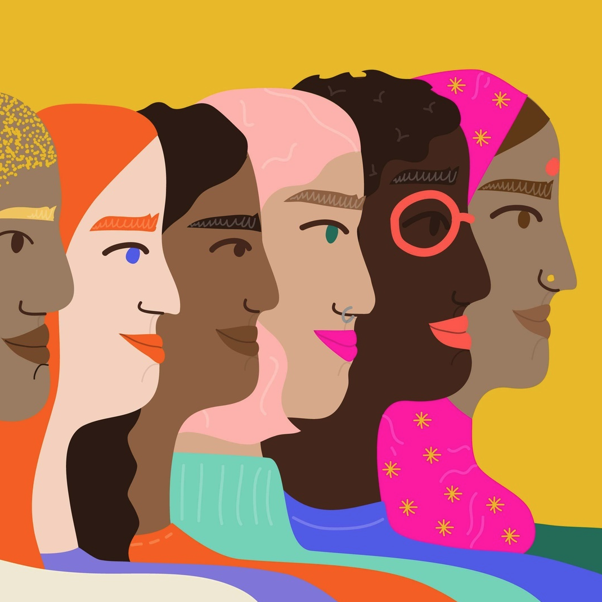

examining bias
everyone has it! let's work on it together.
what is bias?
According to Merriam-Webster, bias, when used as a noun, can mean an inclination of temperament, outlook, or prejudice. Though some bias is extremely apparent, like in hate-based organizations or crimes, these judgements can be unconscious or unknown to us when we exert or think them. This can be extremely harmful at times, however, these can be avoided if you become aware of them and make an effort to remove them from your thoughts or actions.

types of bias:
- Affinity bias: occurs when one unknowingly prefers someone due to a commonality/multiple commonalities
- Confirmation bias: when one looks for information or evidence that a preconceived judgement about someone or idea and ignore anything that disproves that notion
- The Bandwagon Effect: when one believes something simply because others do
- Halo Effect: when one learns about an impressive or preffered feat completed by someone else or an organization and allows this to exalt their perception of that person or organization
- Horns Effect: opposite of Halo Effect, when one learns about something negative a person or organization has done and allows them to only view that person or organization negatively
- Gender bias/Sexism: the preference of one gender over the other
- Ageism: the preference of younger or older people over each other
- Racism/Racial bias: the tendency to prefer certain races over others
- Religious bias: when one prefers certain religions over others
- Name bias: to read a name and perceive gender, race, age, etc. from that name and then judging based on it
- Beauty bias/"Pretty Privilege": the tendency to prefer more physically attractive people and to provide them more leniency when they say something/perform unsatisfactorily
- Anchor bias: to use the first instance of information on a subject as the basis for opinion on that subject afterward
- Nonverbal bias: to judge or perceive someone based on body language or facial responses
- Authority bias: to give more importance or truth to an idea or action carried out be a person in power due to that power
- Status quo bias: the tendency to prefer people or ideas that allow for life/culture/processes to stay the same
- Perception bias: when one allows for stereotypes to cloud their judgement/opinion on someone or an idea
- llusory biasI: the perceived connection between two pieces of information even though there is no evidence to corroborate it
- Recency bias: when one creates an opinion or thought-process based on information learned the most recently
Examples provided were taken from vervoe.
_______
These are not the other forms of bias!
However, these are ones you might likely find in everyday life that you can notice and change. Keep your mind open to ideas and people who might be different from you or your point of view. It may create a relationship, project, or breadth of knowledge you might not have originally considered.
wanna check your own bias? try these tests made by Harvard!

generated by Pitt Fuego
Why make a spark when you can light a fire?